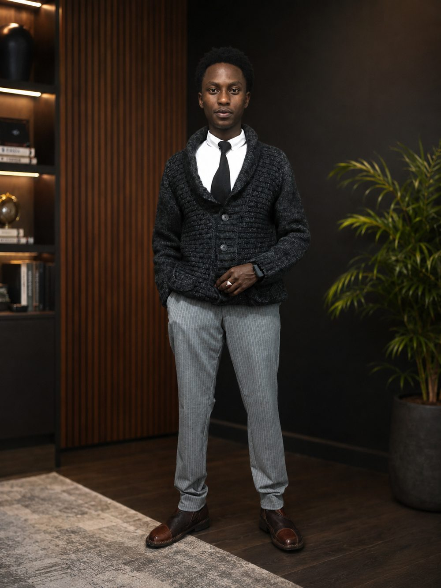

01 · FOUNDATION
Strong fundamentals
Python, Git, SQL, Linux, APIs, testing and clean project structure.
I build practical software around messy data, repetitive work and systems that need to be trustworthy. My current lane is Python, backend development and automation.

I prefer projects where the interesting part is underneath the interface: collecting information, cleaning it, making it searchable, exposing it through an API, or automating a process that used to be manual.
A Kenyan PEP intelligence system built around source citations, structured records and an API. It turns scattered public records into a searchable dataset designed to be traceable back to its sources.
A web application for searching and exploring the UN Security Council Consolidated Sanctions List, with dashboards, API access and data exports.
A tick-level research and trading system with regime detection, risk controls, contract tracking, logging and backtesting.
The direction I'm sharpening for professional work: APIs, data pipelines, automation, SQL, Linux, testing and dependable small systems.
I'm a Computer Science student at the Cooperative University of Kenya, graduating in 2029. A lot of my practical learning happens by building something real first and then going back to understand why it works.
That has led me from government-data collection to compliance systems, from tick-by-tick market experiments to software architecture, and increasingly toward Python automation and backend engineering.
Not a long list of technologies for its own sake. The goal is to become useful at turning a vague problem into a working, testable system.
Python, Git, SQL, Linux, APIs, testing and clean project structure.
Automation, data pipelines, backend services and projects that can be demonstrated rather than merely described.
Freelance and junior opportunities where reliability, curiosity and the ability to learn quickly matter.